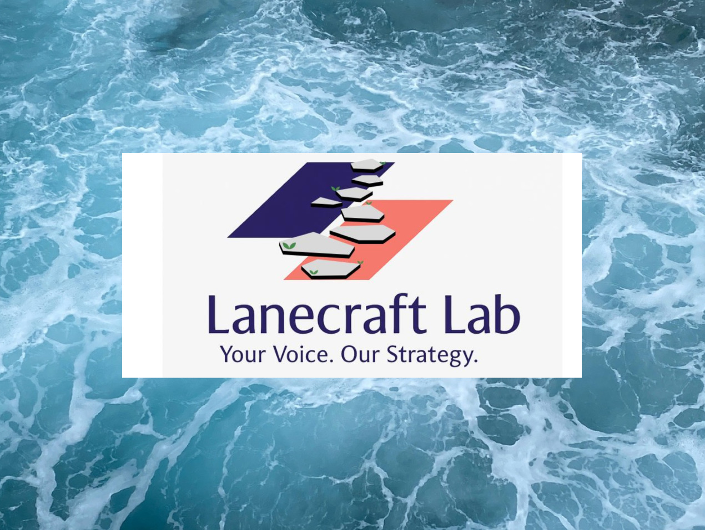

A story that helps millions of other people when it lands in the right channels. We help B2B and B2C brands strengthen their bottom lines by ensuring their stories get out into the world.
We believe there's always a good story to be told, and there's always a journalist who wants to write it, and a podcast host who wants to tell it. We are extremely client-focused. We understand how newsroom decisions drive stories. We move fast, pitch smart, and write well.
Partner With UsFeatured Press
"From Wall Street Journal to Strategic Advisor: How Nish Amarnath Built Lanecraft Lab on the Power of Story Architecture"— Published by Founded by Women · October 2025
What Clients & The Media Are Saying
My experience with Nish was delightful, in every sense of the word. She not only asked the right questions to help me get more clarity on my goals, but validated my approach and suggested actionable items to develop my personal brand. And this was just over an hour of her time. Can't imagine what she can do with additional hours of engagement. Highly recommend her if you need strategic clarity and direction in your career!
Reporter, EQDerivatives · Aug. 2, 2025
I thoroughly enjoyed dealing with a true professional both knowledgeable and caring. I would highly recommend Nish.
NYPD Lieutenant (Ret.) · July 8, 2025
I am immensely grateful for Nish's time and effort she put into collaborating with me on my project. Her words are beautifully honest, insightful and catered to the audience I wanted. If given the opportunity, I would certainly work with her again. A breath of fresh air; thank you Nish!
Playwright, Producer & Actor · June 16, 2025
I worked with Nish to upgrade my resumé to make me more marketable. She really helped me take the content and layout to the next level. 10/10 would recommend!
Oct. 17, 2025
Nish came prepared to our career coaching conversation. She asked great questions and had concrete feedback on how I could grow.
Journalist · June 9, 2025
Media outlets where our clients & work have been featured



What We Do
We launch the argument before we pitch the story
Visibility is not a press release, a pitch list, or a louder version of the same message. It comes from sharper positioning, stronger proof, and a communications system that helps the right people understand why a company and its executives matter now.
Lanecraft Lab works with companies navigating launches, growth moments, market repositioning, public visibility, stakeholder complexity, and leadership transitions.
01
We develop evidence-based market-facing arguments, so that our clients' customers, investors, lenders, partners, influencers, and the media understand what makes a company worth paying attention to.
02
Journalists and podcasters are always looking for sources and interviewees like you. We position our clients as credible, compelling voices in the channels that matter most to their audience.
03
We provide platforms for you to share your public voice. This includes: Op-eds and bylined articles in Tier-1, trade, and niche media. Award submissions. Speaker and panel applications. Social media and digital media visibility. Media interview briefings. Briefs for podcast, guest, and speaker appearances.
04
Diagnostic and advisory support to strengthen your internal systems, identify revenue leakages, and reduce inefficiencies. This includes process mapping and redesign, performance benchmarking and KPI alignment, workflow optimization and documentation, operational risk controls, cross-functional coordination and decision-rights clarification.
05
Advisory support for building resilient governance frameworks, including CEO succession planning, best practices for board appointments, executive search, operational risk identification, and mitigation strategies. Tailored to organizations navigating growth, restructuring, or leadership transitions.
06
Advisory on embedding sustainability into operational strategy. Includes: Energy efficiency assessments and vendor audits. ESG-aligned operational frameworks. Carbon footprint reduction strategies. Resource optimization and reporting metrics. Strategic alignment with regulatory, lender, and investor-driven sustainability goals.
Our Clients

Founder visibility, product positioning, and earned media strategy for a fast-growing golf training and equipment company.
How Brixton Albert built a $125M+ company from scratch with zero outside funding:
A day in the life of the CEO of a $100M+ company:

Public-sector, facilities, healthcare, retail, workplace, and stadium-facing communications for a menstrual product access company changing restroom standards.
North Miami Vice Mayor Timothe Brings Free Menstrual Products to North Miami Through a partnership with Aunt Flow:
A period party held at Tropicana Field during Reopening Day on April 10, 2026 as the Tampa Bay Rays return to their home stadium:
Watch: Period Party Recap — Tropicana Field, April 10 2026View our reflective spotlight of the Apples for August play below.
Apples for August speaks to the weight of release that flows from the relief of what it means to be fully seen. Set in an apple orchard in upstate New York, the story follows a growing bond between August, a high school senior, and Jude, an aspiring artist gearing up for college. Anushka Kar stars as August, while Patrick Eckland steps into the role of Jude.
This coming-of-age play, which premiered at the Next Step Theatre Festival in New York City on May 30, unfolded like a song of remembrance. For me, it stirred a pulse in the chest—the throb of life, a recognition of being met with presence and held without judgment.
The dialogue between August and Jude feels organic, even effortless. Witty moments elicited peals of laughter from the audience. Beneath the surface, though, the script dips into an oasis that rustles and stirs with deeper threads—what does it mean to just be, without performance or polish? What does faith mean to someone who has never believed in it? These musings, rooted in simplicity, strike a universal chord insofar as a yearning for visibility.
Tactile moments—like Jude shrugging into a fresh shirt before a new scene—add texture and realism to the staging. Seasonal shifts mirror emotional changes, setting a rhythm that ground the play in both time and feeling.
And then, there's a twist I didn't see coming—Jude loses his eyesight, almost overnight. In that sudden darkness, the earlier contrast between Jude's belief in something greater fades into August's skepticism in the powers that be. Now, Jude feels unmoored, while August—still herself, still uncertain—becomes his anchor. The move to tilt this paradigm on its axis feels like a masterstroke, a metaphor for the fragility of human perception and for the deeper seeing that sometimes happens only when the surface is peeled raw. It also marks August's steady rise into the power of her natural self.
And here is one of the most haunting lines when Jude tells August, "Every time I hear your voice, it's painful. It grows increasingly tired." Jude hears the ache of love, of concern, of yearning in August's voice. And yet, it's her voice that holds him, quivering yet steady, lost yet present, frustrated yet alive with the ache of loving someone who knows her in his new reality. He can no longer see her, nor pursue his art as before, but her voice carries an evolving truth. Against that backdrop, the narrative, in its nuanced subtlety, offers a portrait of paradox—of grief and connection, loss and presence.
Apples for August invites us into a space where longing coexists with a quieter light, where rootedness becomes its own quiet power. The longing to be seen and heard is one many can relate to. And that's exactly what this play gives you. Your vision and your voice.
01
Performance Golf
Sports & Performance
A performance-driven golf training and equipment brand focused on helping everyday golfers improve their game The company, led by Brixton Albert, a former collegiate athlete and coach, is seeking to build national visibility while strengthening its brand narrative and media presence.
Brand positioning, earned media strategy, and narrative development to boost visibility and authority within the competitive sports and performance ecosystem. Current scope includes:
02
Aunt Flow
Public Health & Advocacy
Founded by Claire Coder in 2016, Aunt Flow has provided access to high-quality period products for free in over 70,000 restrooms across workplaces, schools, stadiums, airports, healthcare settings, and other public venues. Workplaces and public venues Aunt Flow has stocked include Google, Netflix, the Houston Airport System, the Tampa Bay Rays' Tropicana Field stadium, and the Chicago White Sox baseball team's home stadium, Rate Field.
Lanecraft Lab supports targeted visibility across key institutional and trade audiences, including facilities managers, building and venue operators, procurement partners, and distributors, while positioning Aunt Flow within the broader operational, cultural, and equity conversations driving period-care access toward the same institutional standard as other restroom essentials.
03
A.R.T / New York Theatres
Arts & Culture (Lee Strasberg Institute-Affiliated)
Developed assets for the rollout of Apples for August, a coming-of-age stage production created by a Lee Strasberg Institute-affiliated team. The play,, Apples for August, was written by Anushka Kar and directed by Jeremy Watson.
View our reflective spotlight of the Apples for August play here.
04
Energy Infrastructure Leader
Energy & Sustainability (Confidential)
A global leader in energy management and automation with a strong focus on digital transformation and decarbonization. The client wanted to enhance the visibility and adoption of a new digital retrofit and emissions reduction tool designed for commercial building owners navigating evolving sustainability regulations.
Refining launch communications collateral and designing a multi-phase campaign strategy around the product rollout. This included:
05
Narrative Repositioning + Sectoral Re-Entry
Executive Career Strategy
A senior media executive recalibrating professional direction following a period of career deceleration.
Delivered repositioning framework and sectoral engagement strategy to support reintegration into high-impact media and content roles.
06
Digital Asset Deployment and Content Platform Optimization
Publishing & Content Platforms
A former NYPD lieutenant pursuing multiple book projects sought support to establish a professional-grade publishing and distribution platform.
Equipped the client with a streamlined publication execution plan and platform readiness tools to enable timely market entry via Amazon KDP.
07
Strategic Positioning for a Venture Launch
Finance & Advisory Services
A finance professional with subject-matter expertise in global derivatives, preparing to launch a specialized content strategy and advisory business.
Delivered a calibrated go-to-market approach with tactical inputs to accelerate initial offer deployment, enhance founder focus, and streamline the value proposition across content and consulting arms.

Nish Amarnath
Founder & Principal
With early roots in management consulting, Nish Amarnath has long been drawn to the intersection of strategy and systems. For over a decade, she specialized in capital-intensive, high-stakes sectors through editorial leadership, analysis of deal structures, CDS price trends, ETF sector flows, and strategic collaborations with industry players, as well as federal, state and regulatory agencies. Nish has led editorial teams at Institutional Investor and Industry Dive, guided communications strategy for global organizations, steered a public diplomacy initiative for the UK Government, and written for various Tier-1 and trade media outlets including The Wall Street Journal, Reuters, TheStreet.com, and S&P Global. She majored in Economics with Distinction, and earned postgraduate degrees in media research and business journalism from the London School of Economics and Columbia University, where she was a James W. Robins Reporting Fellow.

Brentan Debysingh
Media Relations & Editorial Associate
Brentan brings over a decade of experience in sports marketing, media relations, earned media strategy, and editorial support, with a background spanning organizations and brands such as the International Tennis Hall of Fame and the Miami Heat. His career has been driven by a deep engagement at the intersection of marketing and communications across leagues that include the NBA, NFL, and MLS. His addition strengthens Lanecraft Lab's bench across sports and sports-adjacent verticals, while expanding our capacity to support founder-facing storytelling, customized media outreach, and fast-moving newsroom-facing work.

Vasant Laplam
Content & Communications Strategist
Media engagement for our clients involves thinking like a journalist and understanding how newsroom decisions are made. Vasant, whose career combines creativity and analysis, brings a sharp editorial lens to our media-facing work. At Lanecraft Lab, Vasant takes the lead on editorial and content development initiatives, including pitch framing, award applications, speaking submissions, client features, and social media management. A former software engineer, he helped launch the award-winning NYT Cooking app. As a journalist, his focus on thoughtful source development opened doors to stories in The New York Times, Fast Company, trade publications, and local news outlets. He also led a team of interns at the Dow Jones News Fund. He holds degrees in Civil Engineering from Cornell University and Multimedia Journalism from New York University.
Advisory Committee
Lanecraft Lab is building a circle of advisors whose experience spans public diplomacy, international development, capital markets, energy, AI, healthcare, financial services, and organizational transformation. Our advisory members offer insight, perspective, and strategic foresight as we scale our work at the intersection of narrative intelligence, capital strategy, and systems alignment.
Current members include:
Jonathan Ward
International Affairs & Trade Advisor
Chair, Wisconsin World Affairs Council
Jon brings extensive experience in diplomacy, public affairs, trade policy, and national security strategy. Over the course of his career, he has served in Saudi Arabia, Papua New Guinea, Iraq, Pakistan, India, Brazil, and Washington, D.C., working across market access, investment attraction, supply chains, and government relations.
David Trask
National Director, ARC Facilities
Host, Facility Voices Podcast
David brings deep facilities and operations insights that ground our strategies in real-world use. He has spent years translating complex building realities into practical decisions for hospitals, schools, stadiums, and public agencies. His ability to bridge ground-level operations with leadership priorities is invaluable for our work at the intersection of strategy, systems, and stakeholder outcomes.
Dr. Jason Baker
Assistant Professor of Medicine & Attending Endocrinologist
Cornell Medical College, New York
Dr. Baker founded Diabetes Empowerment International, formerly Marjorie's Fund, a nonprofit advancing education, access, and advocacy for people with Type 1 diabetes. With deep experience across clinical care, global health, and nonprofit leadership, he brings strategic insight to Lanecraft Lab's work at the intersection of health equity, and systems change.
Additional members will be listed here as the committee expands.
Contact Us
Do you feel you need a visibility push or help with strategic communications and market-facing messaging support? Bring us the brief, the bottleneck, and the messy middle. We're here for all that. We'll carry you through to the end.
We review and respond to every inquiry. We assess alignment and fit. And we're always happy to hop on our call and provide recommendations.
Or email us directly:
comms@lanecraftlab.com
Careers
We're a lean, fast-moving environment and we believe in creativity, lateral thinking, critical thinking, efficiency and results. We're a fun team to work with, and you get exposure to high-ranking executives, influencers, seasoned editors and contributors, and more! As we continue to grow, we're also deepening select collaborations across our broader external network to support a growing mix of projects and engagements.
We're always open to hearing from strong public relations professionals, storytellers, content creators, and former journalists. So, if you'd like to explore working with us, feel free to reach out at comms@lanecraftlab.com.
Get in Touch